리눅스마스터-1급 (2003-01-11 기출문제)
1과목: 리눅스 실무의 이해
1. 기억 장치에 대한 설명으로 옳지 못한 것은?
- 캐시 기억 장치(Cache Memory)는 CPU와 주기억 장치의 사이에 위치하여 주기억 장치의 정보들을 고속으로 CPU에 제공하는 최상위 계층의 메모리로써 주기억장치보다 용량이 작다.
- 기억 장치의 관리 기법에는 호출기법(Fetch), 배치기법(Placement), 교체기법(Replacement)이 있다.
- 가상 기억 장치(Virtual Memory)에서 동적 주소 변환(Dynamic Address Translation)은 프로세스가 실행되기 전에 가상 기억 장소의 위치가 실기억 장치의 어디에 위치하는 지를 변환하는 과정이다.
- 페이지 대체(Page Replacement) 알고리즘에서 FIFO(First-In First-Out)는 먼저 적재된 페이지를 제거하는 알고리즘이다.
(정답률: 50%)

2. 물리적인 모니터 하나로 여러 개의 화면을 두는 기능을 무엇이라 하는가?
- 가상메모리(Virtual Memory)
- 멀티태스킹(Multi Tasking)
- 가상콘솔(Virtual Console)
- 멀티유저(Multi User)
(정답률: 59%)
3. 리눅스에 관한 설명 중 맞는 것을 고르시오.
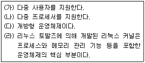
- (가)
- (가)(나)
- (가)(나)(다)
- (가)(나)(다)(라)
(정답률: 82%)
4. 일정 기간만 무료로 사용하는 등의 부분적인 제한을 가하여 배포되며, 계속적인 사용을 위해서는 비용을 지불해야 하는 소프트웨어는?
- 카피레프트 소프트웨어(Copyleft Software)
- 오픈 소스 소프트웨어(Open Source Software)
- 셰어웨어(Shareware)
- 프리웨어(Freeware)
(정답률: 73%)
5. 다음 중 리눅스 배포판이 아닌 것은?
- Debian
- Slackware
- Mandrake
- NetBSD
(정답률: 60%)
6. 중복 저장된 데이터를 가진 적어도 2개 이상의 드라이브로 구성되며, 스트립(Strip)을 사용하지 않는 방식으로, 다중 사용자 시스템에서 최고의 성능과 고장 대비 능력을 발휘하는 RAID 방식은?
- RAID-0
- RAID-1
- RAID-5
- RAID-7
(정답률: 59%)
7. Telnet을 통해 시스템 접속에 성공한 사용자들에게 공지할 사항이 있을 때 이용하는 파일로 가장 적당한 것은?
- /etc/motd
- /etc/rc
- /etc/inittab
- /etc/issue.net
(정답률: 48%)
8. ext3 파일 시스템에 대한 설명으로 가장 적절하지 못한 것은?
- ext2 파일 시스템의 단점을 보완하기 위해 저널링(Journaling) 기능을 추가한 파일 시스템이다.
- 디스크에 데이터를 쓰기 전에 로그에 이에 대한 내용을 남기지만, 시스템이 비정상적으로 종료/재실행된 경우에는 먼저 fsck(File System Check) 기능을 이용하여 복구한다.
- 로그에 기록된 내용이 불안정할 경우에는 파일 시스템 복구 자체를 포기한다.
- 시스템이 비정상적으로 동작을 멈추더라도 파일 시스템을 복구하기 위해서 로그만을 검사하면 된다.
(정답률: 25%)
9. X 윈도우 시스템에서 다른 호스트에 윈도우를 띄우기 위해 필요한 X 클라이언트 프로그램의 옵션은?
- -display
- -geometry
- -xrm
- -bg
(정답률: 53%)
10. 다음은 X윈도우가 구동되는 과정을 도식화한 것이다. 각 항목이 올바로 짝지어진 것은?
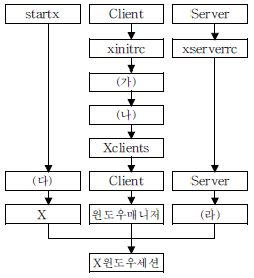
- (가) .Xmodmap (나) .Xresources (다) Server (라) xinit
- (가) .Xresources (나) xdm (다) xinit (라) .Xmodmap
- (가) .Xresources (나) .Xmodmap (다) xinit (라) XF86config
- (가) .Xmodmap (나) xdm (다) Server (라) xinit
(정답률: 42%)
11. /home/ihd 디렉토리를 /root 디렉토리에 tar.gz 형식으로 백업을 받기 위한 backup.sh 쉘 스크립트 파일을 만들고, 이 파일을 cron 데몬을 이용하여 하루에 한번씩 주기적으로 실행 시키려고 한다. 다음은 이를 위한 backup.sh 파일의 내용으로, (가)와 (나)에 알맞은 것을 고르시오.
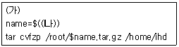
- (가) !#/bin/sh (나) time +%h%m%s
- (가) <$/bin/sh (나) date +%Y%m%d
- (가) #!/bin/sh (나) date +%Y%m%d
- (가) &!/bin/sh (나) time +%h%m%s
(정답률: 24%)
12. 다음 명령에 대한 설명으로 가장 적절한 것은?
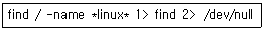
- 현재 디렉토리에서 linux라는 문자열이 포함된 파일을 찾아 그 경로를 find 파일에 저장하고, 에러 메시지는 /dev/null 로 보낸다.
- 루트 디렉토리에서 linux라는 문자열이 포함된 파일을 찾아 그 경로를 find 파일에 저장하고, 에러 메시지는 /dev/null 로 보낸다.
- 루트 디렉토리를 포함한 모든 하위 디렉토리에서 linux라는 문자열이 포함된 파일을 찾아 그 경로를 find 파일에 저장하고, 나머지 파일의 경로는 /dev/null 파일에 저장한다.
- 루트 디렉토리를 포함한 모든 하위 디렉토리에서 linux라는 문자열이 포함된 파일을 찾아 그 경로를 find 파일에 저장하고, 에러 메시지는 /dev/null로 보낸다.
(정답률: 46%)
13. 인터럽트의 종류와 그 내용이 잘못 짝지어 진 것은?
- 입출력 인터럽트 : 입출력의 완료를 알려준다.
- 클럭 인터럽트 : 프로세스의 시간 할당이 지났음을 알려준다.
- 시스템 호출 인터럽트 : 시스템 호출이 발생했음을 커널에 알려준다.
- 프로그램 오류 인터럽트 : 프로그램 실행 중 하드웨어의 오류가 있음을 알려준다.
(정답률: 38%)
14. 다음은 init 프로세스에 의하여 로그인 되는 과정을 도식화한 것이다. (가)와 (나)에 알맞은 내용은?
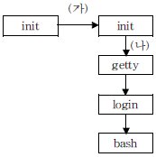
- (가)-fork (나)-exec
- (가)-fork (나)-fork
- (가)-exec (나)-fork
- (가)-exec (나)-exec
(정답률: 50%)
15. 시간 0에 순차적으로 발생한 네 개의 프로세스 P1, P2, P3, P4가 각각 20, 15, 10, 5초씩 수행된다고 할 때, 이들을 FIFO(First In First Out)로 스케줄 했을 경우와 SJF(Shortest Job First)로 스케줄 했을 경우 각각의 평균대기 시간은?
- FIFO : 12.5초, SJF : 25초
- FIFO : 25초, SJF : 12.5초
- FIFO : 7.25초, SJF : 12.5초
- FIFO : 12.5초, SJF : 7.25초
(정답률: 32%)
16. 네트워크 상에서 데이터를 전송하는 방식 중 동기식 전송이 비동기식 전송에 비하여 갖는 장점은?
- 비용이 적게 든다.
- 한꺼번에 많은 데이터를 보낼 수 있다.
- 송신측과 수신측이 클럭을 맞추어야 한다.
- 글자단위로 데이터를 전송한다.
(정답률: 31%)
17. IP 주소(IPv4)에 대한 설명으로 틀린 것은?
- IP 어드레스의 클래스 중 A 클래스는 최상위 비트로 0을 사용한다.
- 호스트 필드의 비트 값이 모두 1인 IP 주소는 브로드캐스트용으로 사용한다.
- 127로 시작하는 IP 주소는 인터넷에 연결되지 않은 네트워크에서 사용하기 위해 할당된 것이다.
- 서브넷 마스크는 IP 주소에서 네트워크 ID를 얻기 위해 사용한다.
(정답률: 47%)
18. 네트워크 명령어와 기능이 옳게 짝지어진 것은?
- netstat : 전체 네트워크 관련 프로세스를 보여 준다.
- traceroute : 패킷을 위한 최적의 경로를 찾아준다.
- ping : 지정한 시스템의 OS가 제대로 운영되는지를 확인한다.
- route : 라우팅 테이블에 특정 경로를 추가한다.
(정답률: 39%)
19. 다음은 어떤 명령어를 실행한 결과인가?
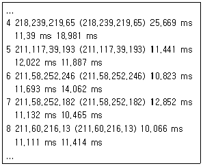
- traceroute
- ping
- netstat
- nslookup
(정답률: 50%)
20. nslookup 명령어의 검색에 대한 설정은 set type = KEY 와 같은 형식으로 설정한다. 여기에 사용 되는 KEY와 이에 대한 기능이 잘못 연결된 것은?
- HINFO : 대상 호스트의 전자우편 정보
- UINFO : 대상 호스트의 사용자 정보
- WKS : 대상 호스트가 지원하는 주요 서비스들의 정보
- NS : 대상 호스트의 네임서버에 대한 정보
(정답률: 54%)
2과목: 리눅스 시스템 관리
21. 쉘(Shell)에 대한 설명으로 틀린 것은?
- /etc/shells 파일은 시스템에서 사용 가능한 로그인 쉘(Login Shell)들의 전체경로를 가지고 있다.
- bash는 GNU 프로젝트에서 개발/배포되었으며, 본 쉘(Bourne Shell)과 호환되는 쉘 스크립트(Shell Script) 문법을 가지고 있다.
- tcsh은 사용자들이 자신의 홈 디렉토리에 .tcshrc 라는 파일을 만들어 로그인 시의 각종 환경을 설정할 수 있다.
- 사용자 로그인 쉘(Login Shell)의 변경은 반드시 root 만이 할 수 있다.
(정답률: 60%)
22. 리눅스에서 보안을 강화하기 위한 조치로 가장 적절하지 못한 것은?
- 일반 패스워드 대신에 shadow 패스워드를 사용 한다.
- 패스워드 파일에 MD5를 적용해 점검한다.
- /etc/passwd 파일의 소유자를 root로, 권한을 -rw------- 로 설정한다.
- 패스워드에 expire 일자를 둔다.
(정답률: 47%)
23. bash는 보안을 위해 원격 접속을 한 사용자의 입력이 일정 시간동안 없을 경우 자동으로 접속을 끊어주는데, 이 시간을 정하는 변수는?
- $TIME
- $TMOUT
- $SCRTIME
- $time_out
(정답률: 57%)
24. 아래와 같은 내용이 /etc/passwd 파일에 있을 때, foobar 사용자의 로그인이 안 되는 이유로 맞는 것은?
- UID가 너무 크다.
- 로그인 쉘(Login Shell)이 존재하지 않는다.
- foobar는 계정 이름으로 허용이 되지 않는다.
- 쉼표가 연속적으로 붙어 있다.
(정답률: 40%)
25. 다음은 su 명령에서 사용할 수 있는 옵션들이다. 이 중 효과가 다른 것은?
- -s
- -l
- --login
- -
(정답률: 46%)
26. 다음은 ls -l 명령의 실행 결과이다. 이에 대한 설명으로 가장 잘못된 것은?
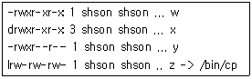
- w는 누구나 실행시킬 수 있다.
- x는 디렉토리이다.
- y는 root와 shson 사용자 이외에 누구도 수정할 수 없다.
- z는 /bin/cp에 해당하는 문자형 장치 특수 파일이다.
(정답률: 44%)
27. 다음 글을 읽고 ( )안에 들어갈 내용으로 가장 적절한 것을 고르시오.
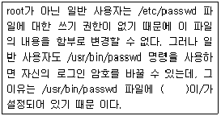
- umask
- SetUID(Set User ID)
- Sticky bit
- SetGID(Set Group ID)
(정답률: 53%)
28. linux.txt 파일의 권한을 rw-r--r-- 로 설정하기 위한 명령은?
- chmod 644 linux.txt
- chmod 655 linux.txt
- chmod 777 linux.txt
- chmod 755 linux.txt
(정답률: 71%)
29. 현재 디렉토리와 현재 디렉토리의 모든 하위 디렉토리에 있는 파일 중 .bash 로 끝나는 파일들에 대하여 해당 파일의 소유자에게 읽기와 쓰기의 권한을 주기 위한 명령은?
- find . -name *.bash | chmod u+rw
- find . -name *.bash -exec chmod u+rw {} \;
- chmod u+rw *.bash
- chmod --recursive u+rw *.bash
(정답률: 20%)
30. 다음 중 파티션에 파일 시스템을 생성해 주는 명령이 아닌 것은?
- mke2fs
- mkisofs
- mkfs
- mkfs.ext2
(정답률: 70%)
31. 시그널에 대한 설명으로 가장 올바른 것은?
- 보통의 경우 부모 프로세스가 시그널을 받아 종료하더라도 자식 프로세스는 종료하지 않고 계속 수행된다.
- 일반 사용자도 killall 명령을 사용하면 root 권한으로 수행 중인 프로세스를 종료시킬 수 있다.
- HUP 시그널을 사용하면 수행 중인 inetd 프로세스를 종료시키지 않고도 설정 파일(/etc/inetd.conf)의 내용을 바꾸어 수행을 계속할 수 있다.
- kill 명령에서 -a 옵션은 모든 종류의 시그널을 출력하라는 옵션이다.
(정답률: 46%)
32. 이름이 vi인 프로세스에 SIGTERM 시그널을 보냈음에도 종료하지 않을 때, 이를 종료시키기 위한 명령으로 가장 알맞은 것은?
- killall vi
- kill -9 vi
- kill -15 vi
- killall -9 vi
(정답률: 30%)
33. 프로세스에 대한 설명으로 틀린 것은?
- 부모 프로세스가 fork 시스템 호출을 수행하여 자식 프로세스를 만든다.
- 사용자가 쉘 프롬프트(Shell Prompt) 상에서 ls 명령을 수행하는 경우, 부모 프로세스는 쉘(Shell)이고 자식 프로세스는 ls가 된다.
- 프로세스들은 전체적으로 계층적인 구조를 보인다.
- 시스템이 부팅된 후 최초로 만들어지는 프로세스는 login 프로세스이다.
(정답률: 69%)
34. 사용 중인 시스템에서 httpd라는 웹 서비스가 실행 중인지 알아보기 위한 가장 적절한 명령은?
- ps ax | grep httpd
- ps | grep httpd
- ps aux
- ps a httpd
(정답률: 48%)
35. vi 에디터로 편집 하던 중 잠시 다른 작업을 하기 위해서 Ctrl-z 키를 사용하여 빠져나왔다. 작업을 마친 후, 다시 vi 에디터의 편집 작업으로 돌아가기 위한 명령은?
- fg
- bg
- vi
- back
(정답률: 24%)
36. rpm을 사용하는 시스템에서 autoconf라는 패키지가 설치되어 있는지 알아보기 위한 가장 적절한 명령은?
- whereis autoconf
- rpm -qa | grep autoconf
- rpm -qf autoconf
- rpm -ql | grep autoconf
(정답률: 60%)
37. rpm 또는 dpkg 명령의 사용 목적과 거리가 먼 것은?
- 새로운 소프트웨어 패키지의 자동 설치
- 설치된 소프트웨어 패키지의 업그레이드
- 프로그램의 복제 방지
- 설치된 소프트웨어 패키지에 대한 정보 검색
(정답률: 45%)
38. 커널을 컴파일하여 설치할 경우 사용하지 않는 명령은?
- make config
- make menuconfig
- make install
- make modules_install
(정답률: 11%)
39. make 명령에 관한 설명으로 틀린 것은?
- 오픈 소스 프로그램의 배포 시에는 Makefile을 만들어 함께 배포하는 것이 바람직하다.
- 프로그램의 개발 과정을 효율적으로 돕기 위해 만들어진 도구이다.
- 하나의 Makefile 내에서 여러 개의 목표(Target)를 명시하는 것이 가능하다.
- Makefile에서 의존성(Dependency)과 목표(Target)를 명시하는 행은 항상 탭(TAB) 문자로 시작해야 한다.
(정답률: 44%)
40. rpm 패키지를 설치하는 중 의존성 문제가 발생하였다. 이를 해결하기 위한 조치 중 가급적 피해야 할 사항은?
- 설치되어 있는 패키지들 중 의존성 문제를 일으킨 패키지들을 모두 업 또는 다운그레이드 한 뒤에 설치한다.
- 설치되어 있는 패키지와 충돌되지 않는 버전의 패키지를 구하여 설치한다.
- 의존성 문제가 발생하지 않는 동일한 기능을 가진 다른 패키지를 설치한다.
- --force 옵션을 사용하여 설치한다.
(정답률: 50%)
41. 리눅스의 장치 드라이버에 대한 설명으로 맞는 것은?
- 리눅스의 장치 드라이버는 대부분 상용 소프트웨어이다.
- 리눅스의 장치 드라이버는 크게 블록 장치 드라이버, 문자 장치 드라이버, 네트워크 장치 드라이버의 세 가지 유형으로 구분할 수 있다.
- Windows NT의 장치 드라이버는 리눅스 커널에서도 사용할 수 있다.
- 리눅스 커널 2.4에서도 USB는 전혀 지원되지 않고 있다.
(정답률: 35%)
42. 장치의 설정 후 해당 장치의 모듈을 메모리에 올리거나 메모리에서 삭제할 때 사용되는 명령이 아닌 것은?
- insmod
- modprobe
- superprobe
- rmmod
(정답률: 62%)
43. 다음 중 프린터를 설정하는 도구라고 볼 수 있는 것은?
- lp
- lpd
- lpq
- linuxconf
(정답률: 7%)
44. PNP가 지원되지 않는 사운드 카드를 설정하려고 한다. 이를 위해 필요하지 않은 정보는?
- 버스 유형(Bus Type)
- 입출력 주소(I/O Address)
- 인터럽트 번호(IRQ)
- 직접 메모리 액세스 채널(DMA)
(정답률: 57%)
45. 리눅스에서는 모든 장치들이 특수 파일(Special File)로 표현된다. 사용 중인 리눅스 시스템에 플로피 디스크 드라이브, IDE 하드디스크 드라이브, 이더넷 어댑터, PS/2 마우스가 각각 하나씩 장착되어 있을 때, 이들 중 /dev 디렉토리에 존재하는 특수 파일이 아닌 것은?
- fd0
- hda
- eth0
- psaux
(정답률: 15%)
46. 리눅스 커널에서 모듈 형태로 구현된 것이 아닌 것은?
- SCSI 디스크 장치 드라이버
- VFAT 파일 시스템
- CPU 스케줄러
- Appletalk 네트워크 프로토콜
(정답률: 19%)
47. 리눅스 커널 소스의 컴파일 과정이 순서대로 바르게 나열된 것은?
- make mrproper; make config; make dep; make bzImage; make modules; make modules_install
- make dep; make mrproper; make config; make bzImage; make modules; make modules_install
- make bzImage; make mrproper; make config; make dep; make modules; make install;
- make bzImage; make config; make dep; make modules; make install
(정답률: 50%)
48. 리눅스 시스템에서 장치가 동작하지 않을 때 확인해야 하는 사항이 아닌 것은?
- PCI 장치의 경우 lspci 명령을 통해 장치가 제대로 인식되었는지 확인한다.
- 장치와 관련된 드라이버 모듈이 올바로 적재되었는지 확인한다.
- 장치와 관련된 장치 파일의 존재 여부를 확인 한다.
- 장치 파일의 주 번호, 부 번호 등을 다른 값으로 바꾸어 본다.
(정답률: 54%)
49. 다음은 /etc/printcap 파일의 내용이다. 이에 대한 설명으로 틀린 것은?
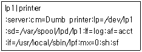
- 입력 필터는 /usr/local/sbin/lpf를 사용한다.
- 인쇄가능한 파일의 최대크기는 0byte이다.
- 프린터가 장착된 포트는 /dev/lp1이다.
- 출력 전 임시 저장소는 /var/spool/lpd/lp1이다.
(정답률: 40%)
50. 다음 중 외장형 직렬모뎀을 사용하기 위한 장치 파일과 가장 관련이 깊은 것은?
- /dev/mem
- /dev/ttyS0
- /dev/port
- /dev/sdd
(정답률: 36%)
51. 일반적으로 다음과 같은 내용을 담고 있는 로그 파일은?
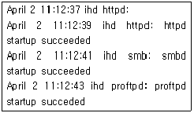
- /var/log/secure
- /var/log/boot.log
- /var/log/cron
- /var/log/dmesg
(정답률: 38%)
52. 시스템 로그를 관장하는 syslogd의 설정 파일에 대한 설명으로 가장 적절하지 못한 것은?
- syslogd의 주설정화일은 /etc/syslog.conf 이며, 설정 행은 facility.priority destination 와 같은 구조로 되어 있다.
- facility는 메시지를 보내는 서브시스템의 이름으로서 auth, authpriv, cron, daemon, kern 등이 존재한다.
- priority는 emerg, alert, crit, err, warn 등을 부여할 수 있다.
- 서비스 데몬의 부트에 관련된 메시지들은 news.* /var/log/boot.log 와 같은 설정을 통해 boot.log 파일에 저장된다.
(정답률: 36%)
53. 다음 중 웹 서버의 access_log에 저장되는 내용이 아닌 것은?
- 데이터의 전송 속도
- 호출된 파일의 크기
- 접속자의 IP 주소
- 요청된 파일 이름
(정답률: 39%)
54. 일반적으로 리눅스 시스템의 로그들은 특정한 파일에 기록되는데, 시간이 지나면 이러한 기록이 쌓여 많은 공간을 차지하게 된다. 다음 중 이러한 현상을 방지하기 위한 것과 가장 관련성이 높은 것은?
- logrotate
- sysreport
- klogd
- swatch
(정답률: 67%)
55. ssh에 대한 설명으로 틀린 것은?
- public key와 private key의 조합을 이용한 보안 기법을 사용한다.
- sftp와 scp는 기존의 ftp나 cp보다 안전한 파일 전송, 파일 복사 등의 기능을 가지고 있다.
- public key로 접근할 경우, 원격 컴퓨터에 ssh 클라이언트의 private key를 복사해 두어야 한다.
- ssh1과 ssh2의 두 가지 프로토콜이 있다.
(정답률: 43%)
56. 패스워드 보안과 암호화에 대한 설명으로 옳지 못한 것은?
- 쉐도우 패스워드 (Shadow Password) : 쉐도우 패스워드는 특별한 권한이 있는 사용자들만 읽을 수 있도록 패스워드에 대한 정보를 /etc/shadow 파일에 저장한다.
- GnuPG : PGP 완성본의 일종으로서 무료로 얻을 수 있지만, IDEA나 RSA등을 사용하기 때문에 미국의 수출제한 조치에 의해 보호되어 미국 외에서의 사용은 금지되어 있다.
- 커버로스(Kerberos) : MIT의 아데나 프로젝트에서 개발된 인증방식으로서 사용자가 접속하면 커버로스가 패스워드를 대신하여 사용자를 인증하고, 네트워크 상에 존재하는 서버와 호스트들에게 해당 사용자의 신분을 증명해 준다.
- SSL(Secure Sockets Layer) : 인터넷 상에서의 보안을 위해서 넷스케이프사에서 개발한 것이며, 클라이언트/서버 인증용으로 사용된다.
(정답률: 25%)
57. 다음은 최근 국내 일간지의 기사 중 일부이다. ( )안에 들어갈 가장 적절한 단어는?
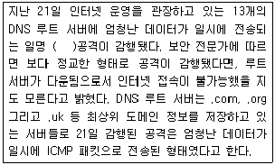
- 패킷 스니퍼
- 서비스 거부
- 트로이 목마
- 핫 스팟
(정답률: 40%)
58. 아래 명령에 대한 설명으로 가장 적절한 것은?
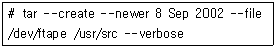
- ftape라는 장치에 있는 내용을 /usr/src로 옮기고 있다.
- /usr/src의 모든 내용을 /dev/ftape에 옮기고 있다.
- tar를 이용하여 ftape라는 장치에 변경된 부분의 백업을 진행하고 있다.
- ftape 장치의 내용과 /usr/src의 내용 중에서 2002년 9월 8일 이후에 생성된 내용들의 동일성 여부를 점검하고 있다.
(정답률: 10%)
59. 리눅스 시스템에서 자료의 백업을 위해 기본적으로 제공되는 명령어가 아닌 것은?
- sudo
- dump
- tar
- cpio
(정답률: 알수없음)
60. 시스템 관리자 홍길동은 재난에 대비하여 사용 중인 리눅스 시스템을 백업하고자 한다. 홍길동이 백업 할 필요성이 없는 디렉토리로서 가장 적절한 것은?
- /home
- /proc
- /var
- /etc
(정답률: 48%)
3과목: 네트워크 및 서비스의 활용
61. 아파치 설정 파일인 httpd.conf에서 서버를 수퍼 데몬에 의해 실행되도록 하는 설정은?
- ServerType standalone
- ServerType daemon
- ServerType inetd
- ServerType superdaemon
(정답률: 28%)
62. 동적인 웹 페이지 구현을 위하여 웹 서비스에서 사용하는 CGI에 대한 설명으로 틀린 것은?
- CGI는 Common Gateway Interface의 약어이다.
- CGI프로그램 구현에 주로 사용되는 언어는 C, C++, PERL, PHP, ASP 등이 있다.
- CGI프로그램의 예로는 방명록, 게시판 등이 있다.
- CGI프로그램의 실행은 클라이언트에서만 실행된다.
(정답률: 39%)
63. 다음은 MySQL의 소스컴파일 설치 과정 중 한 부분이다. 이와 관련된 설명으로 틀린 것은?
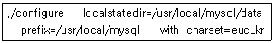
- --prefix=/usr/local/mysql는 MySQL이 설치될 홈 디렉토리를 지정하는 옵션이다.
- --localstatedir=/usr/local/mysql/data는 MySQL의 데이터들을 /usr/local/mysql/data에 저장시키기 위한 옵션이다.
- --with-charset=euc_kr는 MySQL에서 한글사용을 가능하게 해주는 옵션이다.
- 이 작업의 결과 /usr/local/mysql/data 에 mysql과 test 두 개의 데이터베이스가 생성된다.
(정답률: 45%)
64. 아파치 설정 파일인 httpd.conf의 KeepAlive 값이 on으로 지정되어 있을 때, 연결되어 있는 클라이언트가 지정된 시간 안에 아무런 요청이 없을 경우 접속을 끊기 위해 사용하는 설정은?
- KeepAliveTimeout 15
- Timeout 300
- StartServers 5
- MaxKeepAliveRequest 100
(정답률: 43%)
65. 다음은 아파치 설정 파일인 httpd.conf의 내용 중 일부이다. 이에 대한 설명으로 가장 적절하지 못한 것은?
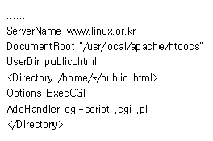
- 메인 서버의 기본문서 루트 디렉토리를 지정 하고 있다.
- Directory 지시자는 디렉토리를 제어할 때 사용하며, 제어 대상 디렉토리는 절대 경로를 사용하여 지정한다.
- 아파치 서버는 www.linux.or.kr/~joe/sample.cgi 요청을 /home/joe/sample.cgi로 바꾸게 된다.
- Perl 스크립트 파일(*.pl)을 CGI로 실행되도록 설정하였다.
(정답률: 42%)
66. 웹 호스팅 서비스에서 사용하는 아파치 웹 서버의 이름기반 가상호스팅(Name-based Virtual Hosting)에 대한 설명으로 가장 알맞은 것은?
- 설정하려는 도메인의 수만큼 IP 주소를 확보 하여야 한다.
- httpd.conf 파일의 NameVirtualHost 항목은 주석처리를 해야 한다.
- 사용하는 랜카드에 ifconfig와 route를 이용하여 가상의 IP를 추가 설정해야 한다.
- IP 주소 한 개로 여러 개의 도메인을 사용할 수 있는 방법으로, 각각의 도메인들에 개별적으로 ServerName, DocumentRoot, CustomLog 등을 설정할 수 있다.
(정답률: 30%)
67. 아파치 설정 파일인 httpd.conf의 DirectoryIndex 지시자에 관한 설명으로 올바르지 못한 것은?
- 클라이언트가 디렉토리에 접근했을 때 보여줄 웹 문서를 나열한다.
- 나열하는 웹 문서는 빈 칸으로 구분한다.
- 이 지시자에 나열한 파일이 디렉토리에 없을 경우 디렉토리의 목록이 전부 출력될 수 있다.
- 이 지시자에 나열한 파일이 여러 개 존재하는 경우 디렉토리의 목록이 전부 출력될 수 있다.
(정답률: 19%)
68. configure 명령에 --prefix=/usr/local/apache 옵션만 주고 아파치를 컴파일 설치하였다. 이 때 아래 항목에 대한 디렉토리 위치가 순서대로 바르게 짝지어진 것은?
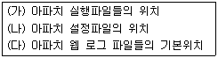
- (가) /usr/local/apache/bin (나) /usr/local/apache/conf (다) /usr/local/apache/logs
- (가) /usr/local/apache/sbin (나) /usr/local/apache/config (다) /usr/local/apache/logdir
- (가) /usr/local/apache/bin (나) /usr/local/apache/config (다) /usr/local/apache/logs
- (가) /usr/local/apache/sbin (나) /usr/local/apache/conf (다) /usr/local/apache/logs
(정답률: 20%)
69. 아파치 설정 파일인 httpd.conf의 <Directory /> ~ </Directory> 지시자 내에 설정 가능한 옵션에 대한 설명으로 틀린 것은?
- Indexes : URL이 가리키는 대상 디렉토리 내의 DirectoryIndex 지시자에 설정된 웹 페이지 초기 파일이 존재하지 않을 경우 디렉토리의 파일 목록을 보여준다.
- Includes : SSI와 같은 서버 측의 추가정보를 사용 가능하도록 하기 위한 옵션이다.
- FollowSymLinks : 사용자인증에 관련된 지시자로 클라이언트가 웹 서버의 특정 디렉토리에 접근할 때 .htaccess파일을 사용 가능하도록 설정하기 위한 옵션이다.
- ExecCGI : CGI를 실행 가능하도록 하기 위한 옵션이다.
(정답률: 28%)
70. 다음 중 다수의 컴퓨터가 파일을 공유하기 위해 사용하는 서비스가 아닌 것은?
- PAM
- Samba
- NFS
- FTP
(정답률: 69%)
71. NFS에 대한 설명으로 틀린 것은?
- NFS 서버의 /etc/exports 파일은 어떤 파일을 노출시킬 것인가에 대한 정보를 가지고 있다.
- NFS 클라이언트는 /etc/fstab 파일에 서버로부터 마운트할 디렉토리에 대한 정보를 가지고 있다.
- rpc.mountd는 클라이언트에서 작동하는 데몬이며, 마운트 요청을 서버에 보내는 데몬이다.
- rpc.nfsd는 서버에서 작동하는 데몬이며, 파일 시스템 요청을 처리한다.
(정답률: 18%)
72. 다음 두 명령어의 실행 결과에 대한 설명으로 가장 적절한 것은?
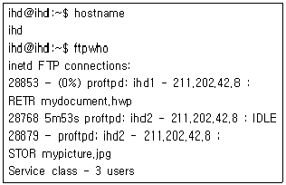
- ihd, ihd1, ihd2 총 3개의 계정이 FTP로 접속해 있다.
- ihd 시스템의 IP 주소는 211.202.42.8 이며, ihd1과 ihd2 라는 이름을 가진 시스템으로부터 FTP로 접속되어 있음을 알 수 있다.
- ihd1 계정은 211.202.42.8의 IP 주소를 가진 시스템에 접속하여 mydocument.hwp 파일을 업로드하고 있음을 알 수 있다.
- ihd2 계정은 ihd 시스템에 두 개의 FTP 연결을 가지고 있으며, 그 중 하나는 mypicture.jpg 파일을 업로드하고 있음을 알 수 있다.
(정답률: 25%)
73. proftpd 데몬에 대한 DoS(Denial of Service)공격을 방어하기 위한 방법으로 틀린 것은?
- inetd 데몬으로 실행 시 설정 파일의 maxinstance 값을 제한한다.
- 설정 파일의 maxclients 변수를 이용하여 동시에 접속할 수 있는 최대 사용자 수를 제한한다.
- standalone 모드로 실행 시 설정 파일의 maxinstance 값을 제한한다.
- xinetd 데몬으로 실행 시 xinetd에서 사용자 수를 제한한다.
(정답률: 17%)
74. 다음은 기본적인 ftp 클라이언트 명령어를 이용하여 ftp 서버에 접속한 후, help 명령을 이용하여 사용 가능한 명령어를 출력한 결과이다. 이들 명령에 대한 설명으로 가장 올바른 것은?
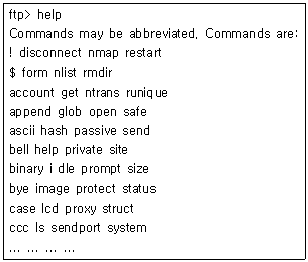
- lcd : 접속한 원격 서버 시스템의 디렉토리 이동 명령이다.
- passive : passive transfer mode의 전환을 담당한다.
- open : 다운로드 또는 업로드할 파일을 연다.
- hash : FTP 서버에 올려진 많은 파일들을 해싱하여 빠르게 찾을 수 있도록 도와준다.
(정답률: 34%)
75. 다음은 testparm 명령의 실행 결과이다. 이에 대한 설명으로 가장 적절한 것은?
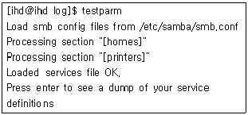
- testparm은 삼바(Samba)를 자동으로 설정해 주는 프로그램이다.
- 삼바(Samba) 설정 파일에 global과 home 그리고 printers section이 존재할 것으로 추정된다.
- 이 상태에서 엔터키를 입력하면 변경된 삼바 설정 파일을 저장한다.
- /etc/samba/smb.conf 파일과 /etc/services 파일을 비교하여 정상적으로 설정되어 있는지 확인시켜 주고 있다.
(정답률: 17%)
76. 삼바(Samba) 설정 파일인 smb.conf의 설정과 그 내용이 잘못 연결된 것은?
- guest account = nobody : 손님 사용자를 허가하는 옵션이다.
- username map = /etc/smbusers : 리눅스 사용자 이름과 삼바 사용자 이름이 다를 경우 이를 매칭 시켜 주는 역할을 한다.
- remote announce = 211.202.42.255 : 삼바 서버가 네트워크 상에서 잘 보이지 않을 경우 211.202.42.1~254 까지의 호스트들에게 자기 자신을 알리는 역할을 한다.
- server string = ihd.or.kr : 해당 서버의 도메인 네임을 명시하는 역할을 한다.
(정답률: 9%)
77. 삼바(Samba)를 설정하는 도구인 SWAT(Samba Web Administration Tool)에 대한 설명으로 가장 적절하지 못한 것은?
- 기본적으로 901번 포트를 사용한다.
- SWAT 서비스의 설정을 위해서는 반드시 root 사용자로 로그인해야 한다.
- /etc/syslog.conf 파일의 내용에 의해서 부팅 중 SWAT 서비스의 구동여부가 결정된다.
- 웹 기반의 설정도구이기 때문에 반드시 netscape 등의 웹 브라우저가 있어야 사용할 수 있다.
(정답률: 13%)
78. 시스템 관리자 홍길동은 마스터노드 1대와 계산 노드 3대를 가지고 베어울프 방식의 클러스터를 구축하였다. 계산노드는 별도의 하드디스크가 존재하지 않으며, 네트워크로 부팅을 시도하여 마스터 노드로부터 커널을 받아 부트스트랩을 실시한 후 NFS를 통해 네트워크로 모든 파일시스템을 마운트하게 된다. 다음 중 해당 클러스터의 NFS 설정과 관련한 설명으로 가장 적절하지 못한 것은?
- 계산노드는 그 자신의 루트 파일시스템 조차도 마스터노드로부터 네트워크를 통해 마운트를 해야 하므로, 커널은 반드시 [Root File System on NFS] 항목을 체크한 후 컴파일해 두어야 한다.
- 위와 같이 디스크 없는 시스템을 구축할 때 흔히 사용되는 NFS 서비스는 커널영역의 서비스와 사용자 영역의 서비스로 나뉘어질 수 있는데, 사용자 영역의 서비스는 rpc.mountd와 rpc.nfsd 라는 두 서버를 사용하게 되며, 이를 확인하기 위해서는 rpcinfo 명령을 사용한다.
- /etc/hosts 파일에 마스터노드 및 모든 계산 노드를 등록해 두는 것이 혼란의 여지가 없고, 약간의 속도 향상도 기대할 수 있다.
- 만일 /etc/exports 파일이 수정되었을 경우, NFS 관련 데몬들은 변경된 사항을 자동으로 인식하게 되므로 별도로 재시작할 필요가 없다.
(정답률: 46%)
79. Sendmail에서 사용하는 파일과 가장 거리가 먼 것은?
- aliases.db
- inetd.conf
- aliases
- $HOME/.forward
(정답률: 31%)
80. 메일전송 에이전트인 MTA(Mail Transfer Agent)에 대한 설명으로 틀린 것은?
- 사용자들이 메일을 볼 수 있도록 서버에 도착한 메일을 사용자의 컴퓨터로 전달해 주는 역할을 한다.
- 전달받은 메일을 다른 메일서버로 전달하는 Relay 역할을 할 수 있다.
- SMTP 프로토콜을 주로 사용하며, 포트번호는 25번을 사용한다.
- 대표적인 프로그램으로 Sendmail, Qmail 등이 있다.
(정답률: 50%)
81. Qmail에 대한 설명으로 틀린 것은?
- Sendmail을 대체하기 위해 Dan Bernstein이 만든 메일서버 프로그램이다.
- 메일보안을 구현하기 위한 솔루션으로 Sendmail 에 비해 보안기능이 탁월하다.
- 상업용 프로그램이므로 소스를 공개하지는 않는다.
- 기존의 Sendmail을 지원하며, 안정성과 대용량 처리능력 등으로 각광을 받고 있는 프로그램 이다.
(정답률: 44%)
82. ( )안에 알맞은 것은?
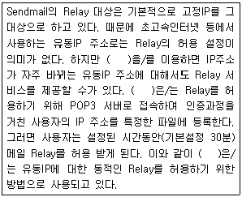
- DHCP(Dynamic Host Configuration Protocol)
- DNS(Domain Name System)
- DRAC(Dynamic Relay Authorization Control)
- DDOS(Distributed Denial Of Service)
(정답률: 22%)
83. 다음은 Sendmail의 설정 파일인 sendmail.cf 파일의 설정 내용 중 일부이다. 이에 대한 설명으로 가장 적절하지 못한 것은?
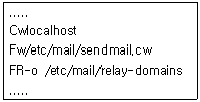
- C와 F는 클래스를 지정하는 명령이다.
- /etc/mail/sendmail.cw 파일에는 메일을 송신 해도 되는 도메인과 사용자 계정들이 나열되어 있다.
- -o 옵션은 파일이 비어있어도 괜찮다는 의미이다.
- /etc/mail/relay-domains 파일에는 relay가 허용 되는 도메인들이 나열되어 있다.
(정답률: 0%)
84. Sendmail의 설정 파일인 sendmail.cf의 option 섹션에서 설정하는 내용으로 적절하지 못한 것은?
- 메일 메시지의 최대 바이트 수
- 메일 전송이 안되었을 때, 송신자에게 반송하기 까지의 시간
- 메일 전송이 안되었을 때, 송신자에게 경고 메일을 보내기까지의 시간
- Sendmail에 접근 가능한 특정 호스트나 도메인
(정답률: 알수없음)
85. Sendmail에서 사용하는 sendmail.cf의 작성 규칙으로 적절하지 못한 것은?
- 줄 단위로 작성한다.
- #으로 시작하는 줄은 주석으로 처리하여 무시한다.
- 줄의 시작은 공백이나 탭으로 시작할 수 없다.
- config에 사용하는 명령에는 C, D, F, H, P, R, S, V 등이 있다.
(정답률: 57%)
86. 다음은 스팸 메일을 방지하기 위한 /etc/mail/access 파일의 설정이다. 이에 대한 설명으로 틀린 것은?
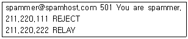
- 송신자가 spammer@spamhost.com인 메일은 “You are spammer”라는 경고메시지를 보내면서 RELAY를 허용한다.
- 211.220.111.* 에서 보내진 모든 메일은 RELAY가 거부된다.
- 211.220.222.* 에서 보내진 모든 메일은 RELAY가 허용된다.
- 이 파일을 수정한 후에는 설정내용의 적용을 위해 “makemap hash /etc/mail/access < /etc/mail/access” 명령을 사용한다.
(정답률: 40%)
87. 메일서버관리자 홍길동은 아래와 같은 조건으로 Sendmail을 실행하려고 한다. 이를 위한 올바른 명령은?
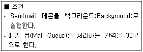
- ./sendmail -bg -q30h
- ./sendmail -bd -q30m
- ./sendmail -bd -q30h
- ./sendmail -bg -q30m
(정답률: 8%)
88. 프록시 서버에 대한 설명으로 가장 적절한 것은?
- 네트워크 상의 모든 호스트가 동일한 계정을 가지게 하여 마치 단일 시스템처럼 보이게 한다.
- 도메인 내부에 들어오는 요청을 필터링함으로써 일종의 방화벽 역할을 할 수 있다.
- 원격 호스트의 프로세스 생성에 관여한다.
- 프린터와 같은 각종 주변기기를 공유하는데 사용되기도 한다.
(정답률: 50%)
89. DNS 서버에 대한 설명으로 옳지 못한 것은?
- 두 개 이상의 서버를 할당하여 주 네임서버와 보조 네임서버로 운영하면 네트워크의 신뢰성을 높일 수 있다.
- 호스트 네임을 IP 주소로 변환하는 역할을 담당한다.
- exam.ihd.or.kr 이라는 컴퓨터에 인터넷을 통해서 접근하기 위해서는 해당 도메인 이름이 DNS나 local 호스트에 등록되어 있어야 한다.
- 다수의 호스트 이름들이 동일한 IP 주소를 갖는 것은 허락되지 않는다.
(정답률: 48%)
90. 수퍼데몬은 서비스 요청이 들어오면, 포트번호를 이용하여 어떤 요청인지를 판별한다. 이와 같이 서비스와 이에 대응하는 포트번호를 가지고 있는 파일은?
- /etc/services
- /etc/syslogd
- /etc/portinfo
- /etc/portmap
(정답률: 36%)
91. 프록시 서버의 일종인 squid에 대한 설명으로 틀린 것은?
- squid는 사용자가 요청한 파일을 서버에 남겨둠으로써 같은 파일에 대한 추후 요청을 보다 신속하게 서비스한다.
- squid는 다수의 서비스(예를 들어 ftp, telnet, http 등)를 동시에 지원하지 못하며, 따라서 초기 설정 시 캐슁을 지원하고자 하는 서비스를 지정 하여야 한다.
- squid.conf 설정 파일을 이용하여 사용할 캐슁 공간의 크기를 지정할 수 있다.
- squid를 정상적으로 설정하기 위해서는 시스템에 squid라는 사용자를 추가해야 한다.
(정답률: 42%)
92. DHCP 서버의 설정에 관한 설명으로 가장 적절 하지 못한 것은?
- DHCP 서버가 동작하기 위해서는 커널에서 MULTICAST 기능이 지원되어야 한다.
- 일부 DHCP 클라이언트에서 문제의 소지가 있어 255.255.255.255를 위한 라우팅을 추가해 주는 것이 좋다.
- 설정 파일의 option subnet-mask 옵션을 통하여 각 클라이언트로 하여금 사용할 서브넷 마스크를 알려준다.
- 클라이언트에서 DHCP 서버를 찾을 수 있도록 설정 파일의 fixed-address 항목에 서버 자신의 IP 주소를 기재해야 한다.
(정답률: 28%)
93. 다음은 수퍼데몬의 일종인 inetd 설정의 일부이다. 이에 대한 설명으로 가장 올바른 것은?
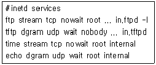
- wait, nowait 부분은 inetd가 서비스 요청을 받았을 경우, 즉시 다른 요청을 처리할 것인지 아닌지를 명시해 놓은 필드로서 보통 tcp는 nowait, udp는 wait를 사용한다.
- ftp는 stream이라는 프로토콜을 사용하며, root 권한으로 실행되도록 설정되어 있다.
- time과 echo는 internal이라는 이름의 실행파일로 서비스가 이루어진다.
- 이 설정 파일의 이름은 /etc/services 이다.
(정답률: 27%)
94. 다음은 ftp 데몬에 대한 xinetd 설정이다. 이에 대한 설명으로 가장 적절하지 못한 것은?
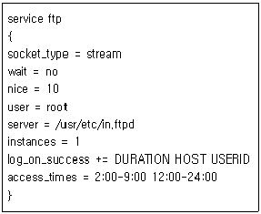
- access_times 옵션을 이용하여 FTP 서비스가 가능한 시간대를 설정하고 있다.
- log_on_success 옵션을 이용하여 이전의 설정에 서비스 진행시간, 원격지의 IP 주소 그리고 실행 시킨 사용자 ID를 추가하여 기록하도록 한다.
- instances 옵션을 통하여 FTP 서버가 실행될 때 넘겨질 인자값을 설정하고 있다.
- nice 옵션을 통하여 해당 서버의 우선권을 10으로 설정하고 있다.
(정답률: 43%)
95. DHCP 서버의 설정 파일인 dhcpd.conf 파일에서 DHCP 클라이언트가 DHCP 서버에 어떠한 요청을 하도록 하는 설정이 아닌 것은?
- netmask
- timeout
- retry
- backoff-cutoff
(정답률: 27%)
96. 아래의 빈 칸에 들어갈 단어로 가장 알맞은 것은?
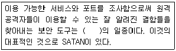
- 스캐너(Scanner)
- 방화벽(Firewall)
- 스니퍼(Sniffer)
- 스푸퍼(Spoofer)
(정답률: 43%)
97. 사용 중인 시스템에 리눅스를 설치한 후 하드 디스크의 모든 디렉토리와 파일을 테이프에 백업하였다. 일주일 후 하드 디스크에 있는 /bin/ps 파일과 테이프에 백업되어 있는 /bin/ps 파일의 크기가 달라져 있었을 때, 네트워크 침해 유형으로 가장 의심스러운 것은?
- 침입 탐지 시스템(Intrusion Detection System)
- 트로이 목마(Trojan Horse)
- 스푸핑(Spoofing)
- 서비스 거부(Denial of Service) 공격
(정답률: 47%)
98. VPN(Virtual Private Network)에 대한 설명으로 틀린 것은?
- VPN은 인터넷과 같은 공중망(public network)을 이용하여 사설망(private network)의 효과를 제공하는 기술이다.
- IPSec은 IP 계층의 보안을 위한 것으로 IP 데이터그램의 인증과 무결성, 기밀성을 제공한다.
- L2PT는 IETF의 RFC 2661로 지정되어 있으며, PPP 프레임을 캡슐화하여 터널을 형성하게 한다.
- VPN은 인터넷을 사용하기 때문에 기존 사설망 보다 비용이 많이 든다.
(정답률: 50%)
99. 트로이 목마와 백도어에 대한 대응책으로 가장 적절하지 못한 것은?
- 주기적으로 파일에 대한 무결성 점검을 한다.
- CD-ROM으로 깨끗한 부팅을 수행한다.
- 침입 탐지 시스템을 구축한다.
- 시스템 로그들이 지나치게 쌓여 서비스 거부 공격을 당할 수 있으므로 시스템 로깅기능을 비활성화 시킨다.
(정답률: 40%)
100. 다음 iptables의 설정에 대한 설명이 잘못 된 것은?
- # iptables -A INPUT --protocol tcp --dport 80 -j ACCEPT : tcp 80번 포트를 사용하는 웹 서버로의 접속을 허용하는 설정
- # iptables -A INPUT -s 200.200.200.110 -j DROP : 200.200.200.110 으로부터 오는 모든 패킷을 무시하는 설정
- # iptables -A INPUT -i lo -j ACCEPT : eth0으로 오는 모든 트래픽을 받아들이는 설정
- # iptables -A INPUT --protocol tcp --dport 443 -j ACCEPT : tcp 443번 포트를 사용하는 보안 웹 서버로의 접속을 허용하는 설정
(정답률: 30%)